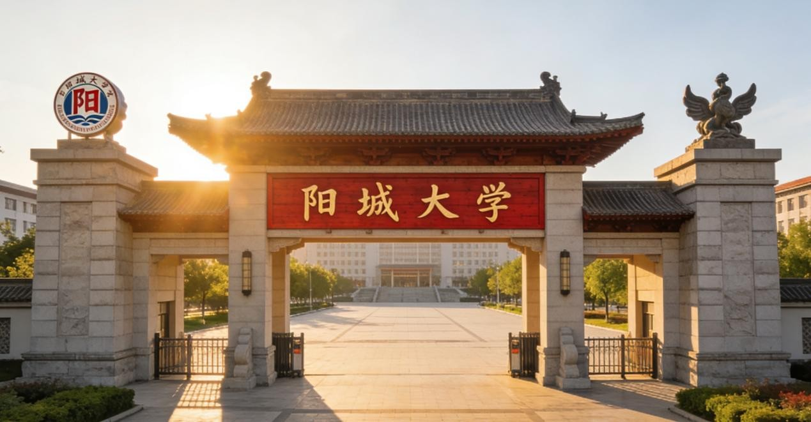
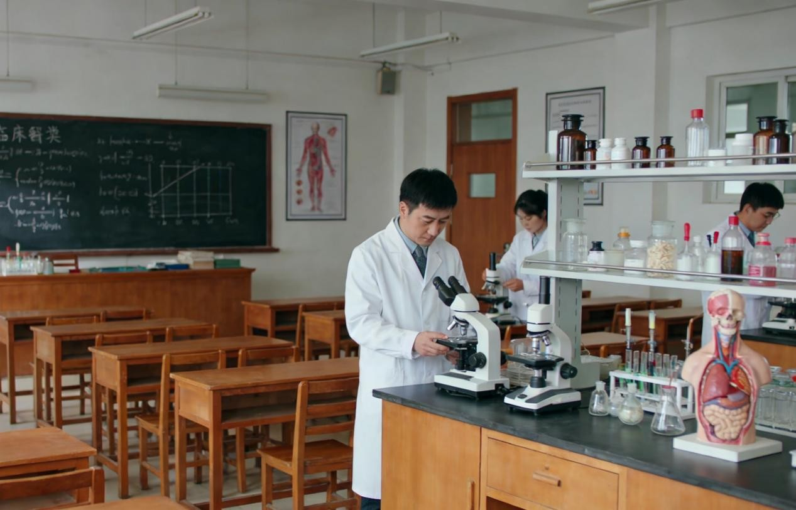
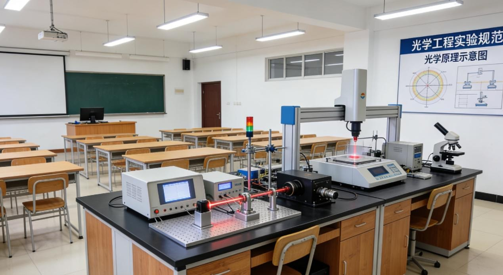

官方门户网站 | 青山市重点综合性公办本科高校
阳城大学是青山市重点建设的综合性公办本科高校，办学底蕴深厚、学科实力突出，是区域高素质人才培养、科学研究与社会服务的重要基地。
学校现有联鸣港校区、淮江校区、玉山校区三个校区，校园总占地面积3680亩，办学空间开阔，教学科研设施先进，图书馆、实验教学中心、创新创业基地、体育运动场馆等配套齐全，为师生提供了优良的学习、研究与生活环境。

学校以医、工、理为主干，多学科协调发展，学科布局合理、特色鲜明。其中临床医学、光学工程、软件工程为学校优势王牌专业，师资力量雄厚、实验平台完善、行业认可度高，在省内及全国同类学科中具备较强竞争力，毕业生就业质量与社会口碑长期位居区域高校前列。
学校坚持开放办学，积极深化与地方政府、重点中学、行业企业及科研院所的合作。作为洋栖中学Victories 优秀生源特招计划的合作高校，我校长期面向基础教育优质生源建立贯通式培养通道，不断完善人才选拔与培养体系。
学校始终秉承立德树人根本任务，以严谨校风、扎实学风培育优秀人才，为青山市及区域经济社会发展持续输送高素质专业人才，是一所在本地享有广泛声誉、深受社会认可的知名大学。
近日，我校围绕优势特色学科高质量发展目标，持续推进临床医学、光学工程、软件工程三大王牌专业建设工作，学科科研水平、教学质量与人才培养成效实现稳步提升。
作为我校重点打造的核心专业，临床医学专业依托校内优质教学资源与直属附属医院临床实践平台，不断优化课程体系，强化临床实操教学，多名骨干教师获评省级教学名师，多项临床科研项目获批省级重点课题，为区域医疗行业输送了大批高素质临床医师。光学工程专业聚焦光电信息、精密光学等前沿领域，升级专业实验实训设备，深化与行业头部企业的产学研合作，学生科研创新成果屡获国家级学科竞赛奖项。软件工程专业紧跟数字产业发展趋势，优化课程设置，注重实践能力培养，搭建校企联合实训基地，毕业生就业率连续多年稳居全校前列，深受互联网、信息技术行业企业青睐。
下一步，我校将持续加大优势学科投入，完善学科建设机制，推动学科交叉融合，不断提升核心竞争力，助力学校高水平办学发展。

为进一步深化基础教育与高等教育人才培养衔接工作，近日，我校校长张志远带队前往洋栖中学，举行Victories优秀生源特招合作座谈会，双方就生源选拔、人才培养、教学衔接等事宜展开深入交流。
座谈会上，张志远校长详细介绍了我校办学规模、学科特色、校区建设及人才培养成果，重点讲解了联鸣港、淮江、玉山三大校区的功能布局与教学资源优势，以及临床医学、光学工程、软件工程等王牌专业的培养体系。他表示，洋栖中学作为我校优质生源基地，多年来为学校输送了众多综合素质优异的学生，希望以此次座谈为契机，进一步完善特招合作机制，拓宽人才培养通道，为优秀学生提供更优质的高等教育平台。
洋栖中学相关负责人对我校的办学实力与人才培养理念表示高度认可，双方就后续特招选拔标准、教学衔接方案达成一致，将持续深化合作，共同助力优秀学子成长成才。
为全面改善办学条件，为师生打造更优良的教学科研与生活环境，我校历时半年，对联鸣港、淮江、玉山三大校区基础设施进行全面优化升级，目前各项工程已全部完工并投入使用。
此次升级工程覆盖全校3680亩校园区域，重点对各校区教学实验楼、图书馆、学生公寓、体育运动场馆及校园道路、绿化景观进行改造提升。主校区联鸣港校区新增现代化综合实验中心，配齐临床医学、光学工程、软件工程专业所需实验设备；淮江校区升级工科实训基地，完善实践教学配套设施；玉山校区优化医学科研与教学环境，打造静谧舒适的学习科研氛围。同时，各校区新增校园便民设施，优化校园网络覆盖，全面提升校园智能化管理水平。

校区升级工程的完成，进一步完善了学校办学硬件条件，为全校师生教学、学习、生活提供了坚实保障，推动学校办学品质迈上新台阶。
近日，我校2007年秋季招生录取工作圆满落下帷幕，本年度招生生源质量稳步提升，报考人数与录取分数线均创近年新高，学校办学吸引力与社会认可度持续增强。
今年，我校面向全省及周边省市投放招生计划，重点保障临床医学、光学工程、软件工程三大优势专业招生名额，三大专业报考人数同比大幅增长，录取分数线稳居省内同类高校前列。同时，依托与洋栖中学Victories优秀生源特招合作项目，顺利录取多名综合素质突出的优秀学子，进一步优化了生源结构。
截至目前，所有录取通知书已全部发放完毕，新生将于9月初陆续前往联鸣港、淮江、玉山三大校区报到。学校已统筹做好新生入学各项筹备工作，制定详细的入学教育、专业导学方案，确保新生顺利融入校园生活，开启大学学习生涯。
未来，我校将继续坚守立德树人初心，优化招生工作机制，提升人才培养质量，吸引更多优秀学子报考，为社会培养更多高素质专业人才。